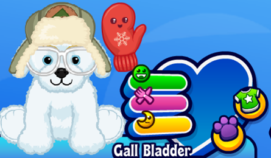
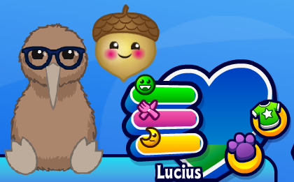
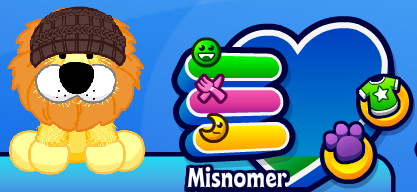
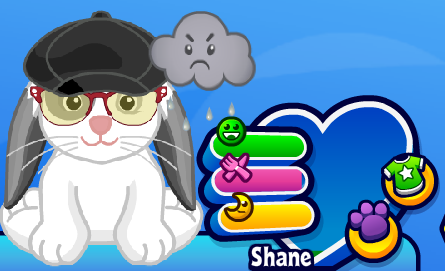
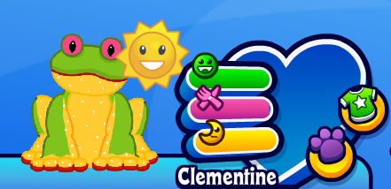
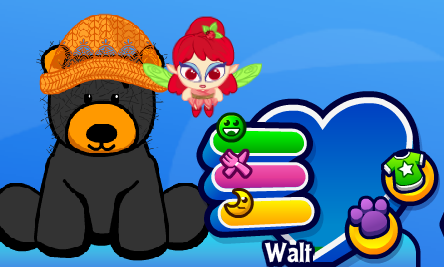
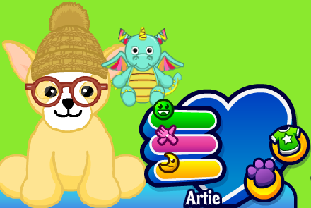

|  | Name: Gall Bladder Adopted: March 30th 2023 Species: Snowy Retriever Puppy Birthday: August 4th PSI: Christmas Toy Trunk PSF: Ooey Gooey Cinnamon Rolls Favourite Colour: Red Fun Facts: He is a child (lil kinz). I got him as part of a yearly event where the pet tokens for his species float across the screen. If you collect 100 of them, you get the pet for free. His room and outfit are both snow/winter themed | |
|  | Name: Lucius Adopted: April 28th 2022 Species: Kiwi Bird Birthday: November 11th PSI: Great Eggscape Hot Air Balloon PSF: Earth Oven Crayfish Favourite Colour: Red and Black Fun Facts: Lucius is a director, but he's also a musician, he just doesn't do that as a job. He is named after a tv show character. He is also from a yearly event like Gall Bladder, this one in April. He shares a birthday with my dad! | |
|  | Name: Misnomer Adopted: September 9th 2023 Species: Lion (lil kinz) Birthday: March 6th PSI: Monarch of the Beasts Throne PSF: Zebra Dog Favourite Colour: Yellow and Blue Fun Facts: I have two of his plushes and they're slightly different colour shades from each other, both in the main and the fur coat. I think his plush is just ADORABLE! I like the idea of having the lil kinz be kids, so that's what his role in the family is :) | |
|  | Name: Shane Adopted: February 22nd 2020 Species: Floppy Ear Bunny Birthday: May 24th PSI: Carrot Car PSF: Frozen Carrot Pops Favourite Colour: May 24th Fun Facts: This was the free pet I got when I made the account. She is one of my favourite digital pets. Shane has the highest skill levels at the Kinzville Academy. Her room is the first themed room I really made (it's an antique shop, mildly inspired by Arte Fact's Curio Shop) | |
|  | Name: Clementine Adopted: February 25th 2022 Species: Tree Frog Birthday: PSI: Tree Frog Trampoline PSF: Tree Frog Fly Soup Favourite Colour: Green Fun Facts: She is my least favourite digital pet. Clothes don't lie right on her model :( I feel kind of bad saying that she's my least favourite but I think it's okay because I still look after her and everything. She's not neglected or anything. | |
|  | Name: Walter (Walt) Adopted: August 19th 2022 Species: Black Bear Birthday: May 4th PSI: Cave Bed PSF: Honey Roast Favourite Colour: Orange Fun Facts: Walt ended up having a very different personality from what I originally intended and the personality ended up being based around his room design, rather than the other way around like I did for the rest of my pets. I intended to have him be almost a "tough guy" persona and have a man cave and everything but then as I was making his room and styling his outfits I found that it didn't really fit him so I switched directions and I'm quite happy with how it turned out:) | |
|  | Name: Artie Adopted: February 27th2020 Species: Chihuahua Birthday: October 17th PSI: Poco Fiesta Throne PSF: Bueno Bone Burritos Favourite Colour: Orange Fun Facts: Artie is a total hipster. His favourite place to hang out is the games cafe and complain about people not ordering "real coffee". Luckily, the other pets don't really care. |
A Note:
I just want to say that I own many more codes than I have actually activated. The reason for this is because using a code renews your full player account status by a year (otherwise you become a free player and have limited gameplay options). So I tend to save my codes that I collect until later to make my full player status last longer (unless it's a character I really want).